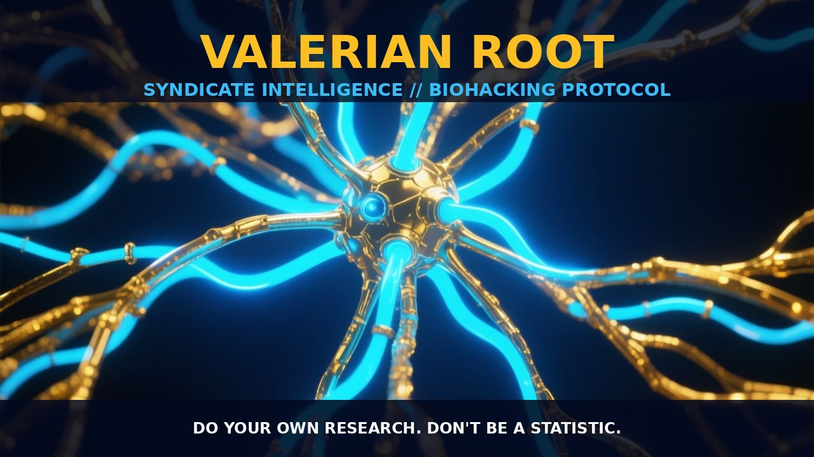

valerian root

THE MECHANICS
Valerian root, derived from the Valeriana officinalis plant, is a well-known herbal remedy that has been used for centuries to promote relaxation and improve sleep quality. Its primary mechanisms of action involve the modulation of GABAergic and adrenergic pathways in the central nervous system. Valerian root contains a variety of bioactive compounds, such as valerenic acid, valepotriates, and alkaloids, which contribute to its pharmacological effects. Valerenic acid, in particular, is thought to act as a GABA-mimetic, increasing the binding of GABA to its receptors and enhancing the inhibitory effects of GABA on neuronal excitability. Additionally, valerian root has been shown to inhibit the reuptake of GABA, thereby increasing its availability in the synaptic cleft. This leads to a calming effect on the nervous system, promoting a state of relaxation and reducing anxiety. The mechanism of action also involves the modulation of adrenergic pathways, with valerian root demonstrating both adrenergic receptor agonist and antagonist properties, which contribute to its anxiolytic and sedative effects.
Valerian root also exerts its effects through the modulation of other neurotransmitter systems, such as the serotonin and dopamine pathways. It has been observed that valerian root can enhance serotonin uptake and activity, which may contribute to its anxiolytic and mood-enhancing properties. Furthermore, valerian root has shown potential in modulating dopamine levels, which can influence mood and cognitive function. The combination of GABAergic, adrenergic, and serotonergic modulation provides a comprehensive approach to promoting relaxation and improving sleep quality. Valerian root’s complex pharmacology makes it a valuable natural remedy for those seeking to enhance their sleep and reduce anxiety without relying on synthetic pharmaceuticals.
BIOLOGICAL LEVERAGE
Valerian root exerts its biological leverage through a multi-target approach, influencing multiple neurotransmitter systems and pathways in the brain. The primary target of valerian root is the GABAergic system, where it acts as a GABA-mimetic, enhancing the binding of GABA to its receptors and increasing GABA levels in the synaptic cleft. This action promotes a calming effect on the nervous system, reducing neuronal excitability and leading to a state of relaxation. Additionally, valerian root inhibits the reuptake of GABA, prolonging its effect and enhancing its overall impact on the nervous system. This modulation of GABAergic pathways is crucial for promoting sleep quality and reducing anxiety, making valerian root a valuable tool for those seeking to improve their sleep patterns and overall mental well-being.
Valerian root also modulates adrenergic pathways, with both agonist and antagonist properties that contribute to its anxiolytic and sedative effects. By inhibiting the reuptake of adrenergic neurotransmitters, valerian root can enhance their availability in the synaptic cleft, leading to a reduction in stress and anxiety. Furthermore, valerian root has been shown to enhance serotonin uptake and activity, which plays a critical role in mood regulation and cognitive function. The modulation of serotonin pathways by valerian root can contribute to its anxiolytic and mood-enhancing properties, providing a comprehensive approach to mental well-being. Additionally, valerian root influences dopamine levels, which can impact mood and cognitive function. The multi-target approach of valerian root allows it to leverage multiple neurotransmitter systems to promote relaxation, improve sleep quality, and enhance overall mental well-being.
TACTICAL IMPLEMENTATION
When implementing valerian root in your biohacking regimen, it is important to consider dosage, timing, and potential stacking options. Valerian root is typically consumed in the form of capsules, tinctures, or teas. While human dosing is not well established in the research, common dosages range from low-to-moderate amounts, generally around 300 to 600 milligrams of dried root extract per day. It is best to take valerian root in the evening, about 30 to 60 minutes before bedtime, to ensure its sedative effects are maximized and do not interfere with daily activities. Valerian root can also be stacked with other natural sleep aids, such as melatonin or chamomile, to enhance its effects and improve overall sleep quality.
It is important to note that valerian root may have a cumulative effect, and its efficacy may increase with continued use. Some users report that it takes a few days to a week of consistent use to achieve the full benefits. However, individual responses may vary, and it is recommended to start with a lower dose and gradually increase as needed. Additionally, valerian root should not be used in combination with other sedatives or medications without consulting a healthcare provider, as it may potentiate their effects. Overall, valerian root offers a natural and effective approach to promoting relaxation and improving sleep quality, making it a valuable tool for the biohacker seeking to optimize their mental and physical well-being.
Do your own research. Don't be a statistic.
Prostar Life Hack
It is best to take valerian root in the evening, about 30 to 60 minutes before bedtime, to ensure its sedative effects are maximized and do not interfere with daily activities.
[ AUTHOR: LEAD TECHNICAL RESEARCHER ]